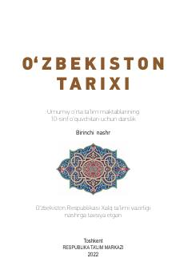

OT10-sinf o'quvchilari uchun O'zbekiston tarixi fanidan rasmiy darslik.
Mazkur darslik umumiy o'rta ta'lim maktablarining 10-sinf o'quvchilari uchun mo'ljallangan bo'lib, XIX asrning ikkinchi yarmi va XX asrning 90-yillariga qadar bo'lgan davrdagi O'zbekiston tarixini yoritadi. Kitobda Vatanimiz tarixidagi murakkab siyosiy, ijtimoiy-iqtisodiy jarayonlar, mustamlaka davri va xalqimizning ozodlik kurashlari ilmiy-pedagogik asosda tushuntirilgan.